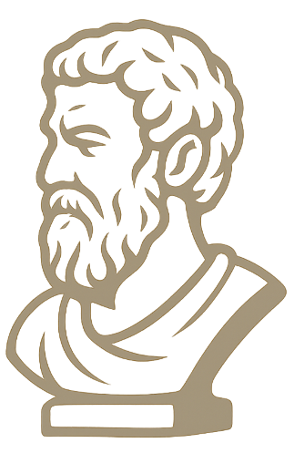

Stoïcisme Moderne
Nouvelle citation
J'ai envie d’y réfléchir
Copier
Filtrer par auteur :
Suivant
J'ai envie d’y réfléchir
Copier
Mes Favoris
Mon Historique
Paramètres
Mode Sombre
Exporter les favoris (JSON)
Exporter
Importer les favoris (JSON)
Importer
D'autres paramètres à venir…
Accueil
Parcourir
Favoris
Historique
Paramètres